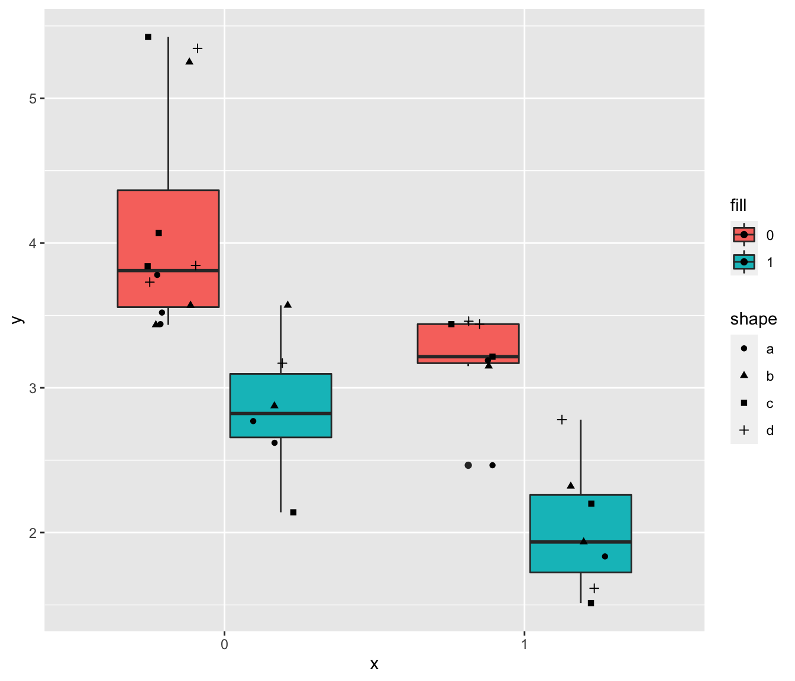

ggplot结合点图与箱线图的问题与解决
王诗翔
最近在使用ggplot2对箱线图叠加点图是发现奇怪的现象，只要我改变点的形状，绘图就出问题了。
下面我通过一个简单的示例展示这个问题。
我们先生成一组简单的数据，并绘制一个正常的叠加图：
library(ggplot2)
library(dplyr)
head(mtcars)## mpg cyl disp hp drat wt qsec vs am gear carb
## Mazda RX4 21.0 6 160 110 3.90 2.620 16.46 0 1 4 4
## Mazda RX4 Wag 21.0 6 160 110 3.90 2.875 17.02 0 1 4 4
## Datsun 710 22.8 4 108 93 3.85 2.320 18.61 1 1 4 1
## Hornet 4 Drive 21.4 6 258 110 3.08 3.215 19.44 1 0 3 1
## Hornet Sportabout 18.7 8 360 175 3.15 3.440 17.02 0 0 3 2
## Valiant 18.1 6 225 105 2.76 3.460 20.22 1 0 3 1data = data.frame(
x = factor(mtcars$vs),
y = mtcars$wt,
fill = factor(mtcars$am)
) %>%
dplyr::arrange(x, fill) %>%
dplyr::mutate(shape = rep(letters[1:4], 8))
set.seed(1)
ggplot(data, aes(x, y, fill = fill)) +
geom_boxplot() +
geom_point(position=position_jitterdodge())这里参考了Overlay geom_points() on geom_boxplot(fill=group)? 来解决点也需要分配到不同的fill组中的问题。
下面就是见证奇怪的时刻：
set.seed(1)
ggplot(data, aes(x, y, fill = fill)) +
geom_boxplot() +
geom_point(aes(shape = shape), position=position_jitterdodge())如果我们对比上面这个图和第一个图，很容易发现点的坐标变化了！
而我们代码的唯一修改就是增加了shape映射以修改点的形状。
我百思不得其解，ggplot完全没有干好它该干的事情嘛。
最后我把问题抛到了stack overflow，很快Jon Spring 进行了解惑：
在这种情况下，我们希望位置抖动“意识到”存在填充美学映射的两个分类。 因为这里的形状没有填充美学映射，在应用抖动之前，该层不会自动分离两个填充分类值。
大概理解起来就是说这里的shape几何对象无法利用fill这个属性，那么需要让因此我们可以手动指定数据的分组，让绘点的这个图层意识到分组的存在。
set.seed(1)
ggplot(data, aes(x, y, fill = fill)) +
geom_boxplot() +
geom_point(aes(shape = shape, group = fill), position=position_jitterdodge())